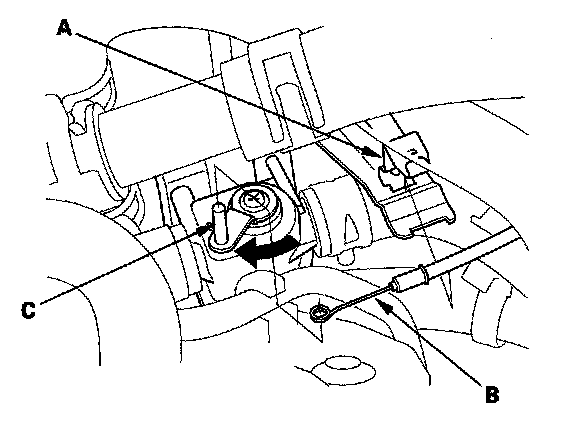
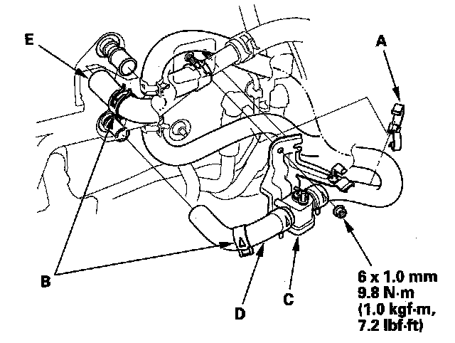
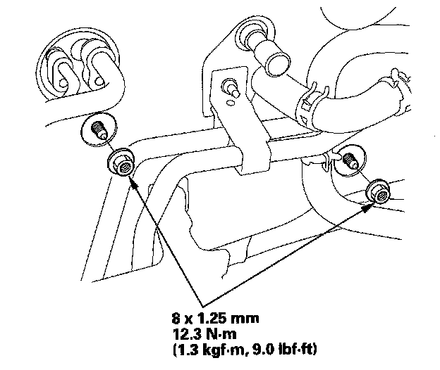
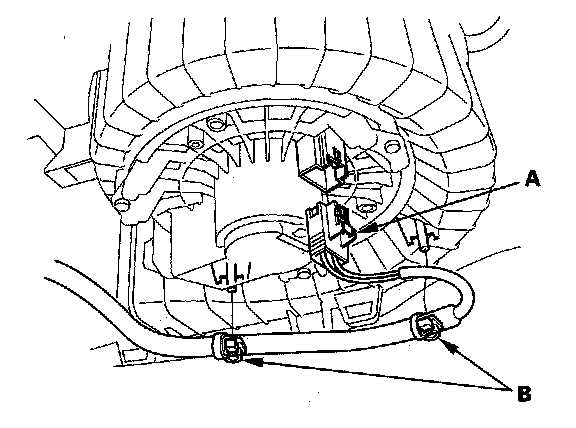
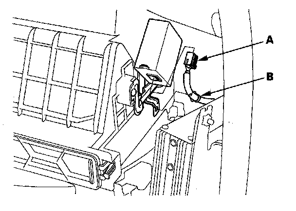
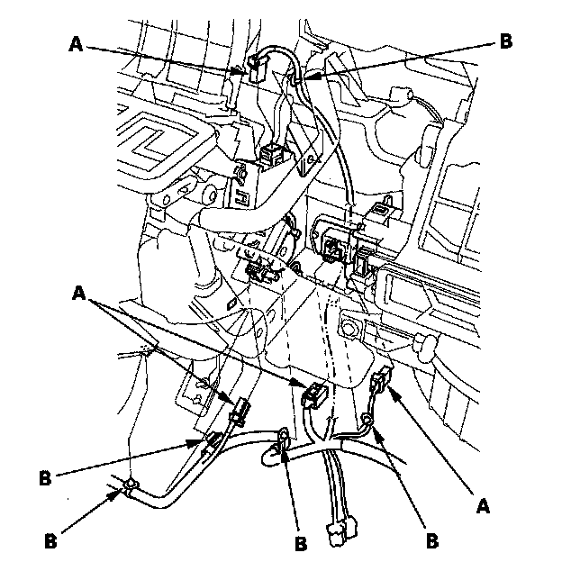
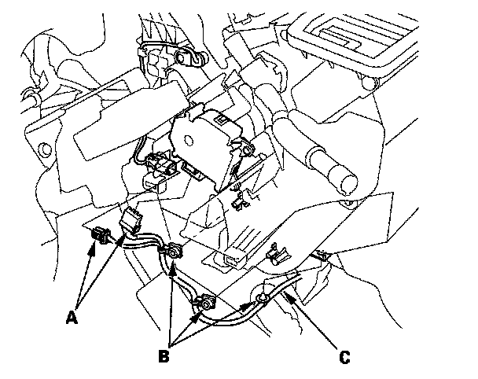
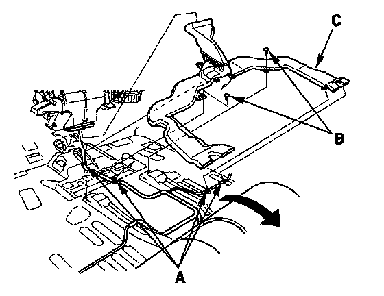
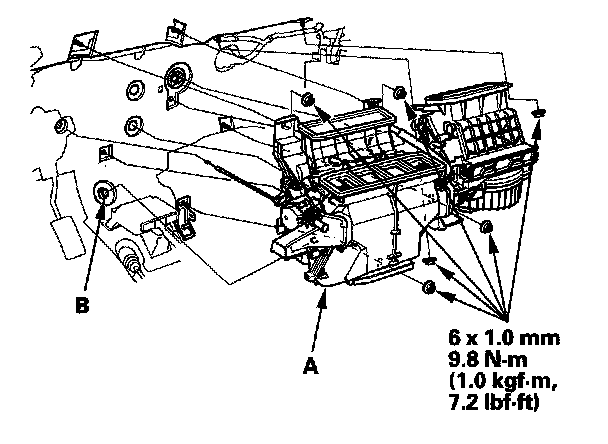
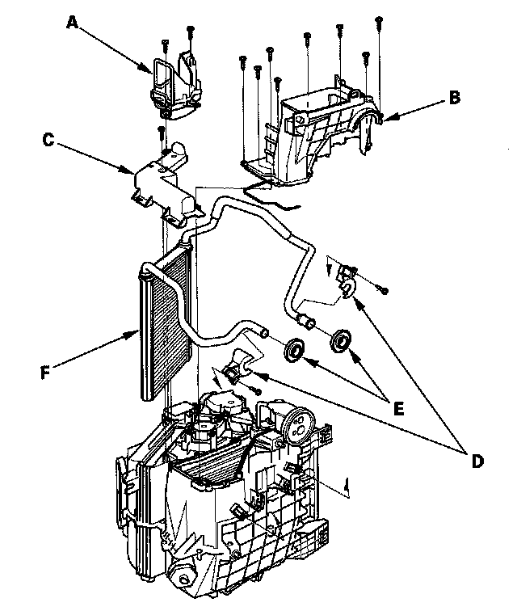

Heater Core Case: Service and Repair
Heater Unit/Core ReplacementSRS components are located in this area. Review the SRS component locations and the precautions and procedures before doing repairs or service.
1. Make sure you have the anti-theft codes for the audio system and the navigation system (if equipped).
2. Make sure the ignition is OFF, then disconnect the negative cable from the battery.
3. Disconnect the front receiver line and front suction line from the front evaporator core.

4. From under the hood, open the cable clamp (A), then disconnect the heater valve cable (B) from the heater valve arm (C). Turn the heater valve arm to the fully opened position as shown.
5. When the engine is cool, drain the engine coolant from the radiator.

6. Remove the clamp (A). Slide the hose clamps (B) back. Remove the nut and the water valve (C), then disconnect the inlet heater hose (D) and the outlet heater hose (E) from the heater unit.
Engine coolant will run out when the hoses are disconnected; drain it into a clean drip pan. Be sure not to let coolant spill on the electrical parts or the painted surfaces. If any coolant spills, rinse it off immediately.

7. Remove the mounting nuts from the heater unit. Take care not to damage or bend the fuel lines or brake lines, etc.
8. Remove the dashboard.

9. Disconnect the connector (A) from the front blower motor. Remove the wire harness clips (B).

10. Disconnect the connector (A) from the adaptive front lighting control unit, then remove the harness clip(B).

11. Disconnect the connectors (A) from the front mode control motor, the passenger's air mix control motor, the recirculation control motor, and the front power transistor. Remove the wire harness clips (B).

12. Disconnect the connectors (A) from the driver's air mix control motor and the front evaporator temperature sensor. Remove the wire harness clips (B) and the wire harness (C).

13. Turn over the carpet. Remove the wire harness clips (A), the rear heater duct mounting clips (B), and the rear heater duct (C).

14. Remove the mounting nuts. Slide the blower-heater unit (A), then remove the drain hose (B) and blower-heater unit.

15. Remove the self-tapping screws and the passenger's heater duct (A). Remove the self-tapping screws and the expansion valve cover (B). Remove the self-tapping screw and the front heater core cover (C). Remove the self-tapping screws, the heater pipe brackets (D), the grommets (E), and carefully pull out the front heater core (F).
16. Install the front heater core, and the front evaporator core in the reverse order of removal.
17. Install the heater unit in the reverse order of removal, and note these items:
- Do not interchange the inlet and outlet heater hoses, and install the hose clamps securely.
- Refill the cooling system with engine coolant.
- Adjust the heater valve cable.
- Make sure that there is no coolant leakage.
- Make sure that there is no air leakage.
- Refer to the front evaporator core replacement.
- Reset the power window control unit.
- Do the steering column position memorization.
- Enter the anti-theft codes for the audio system and the navigation system (if equipped).
- Set the clock.